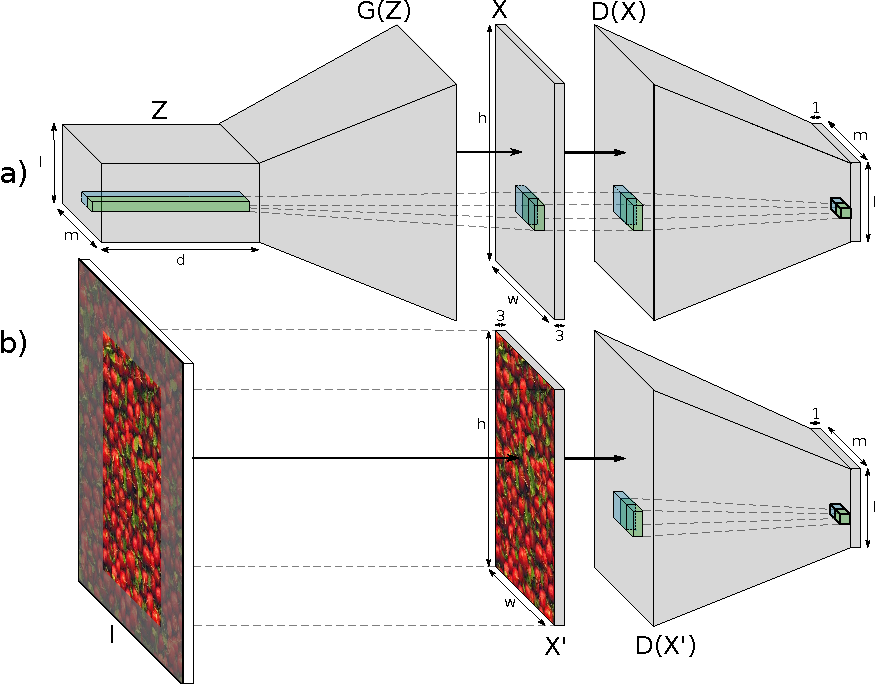
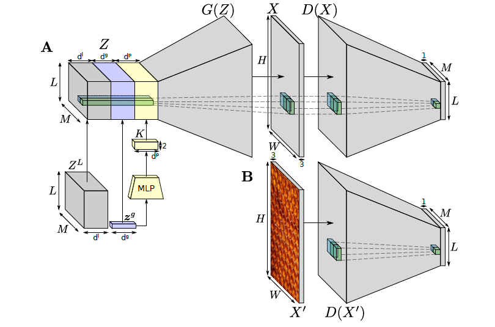
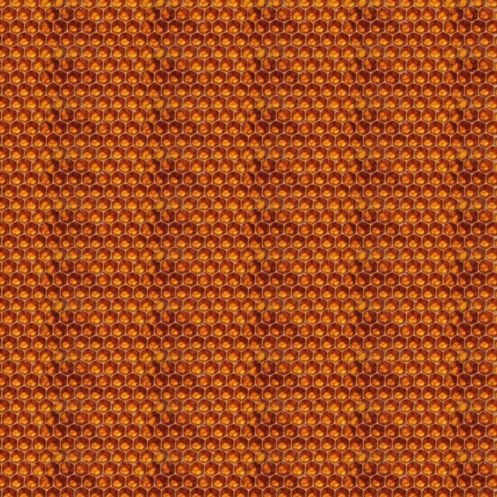
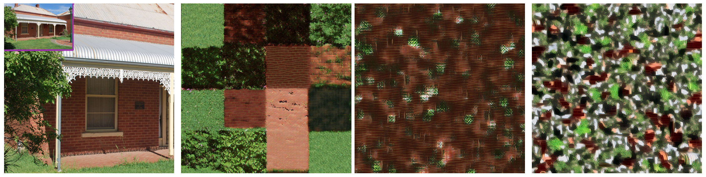
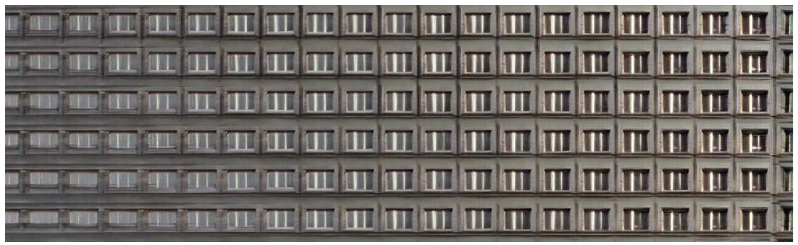

Learning Texture Manifolds with the Periodic Spatial GAN
Предыстория
Есть такая задача - генерация текстур (texture synthesis). Она состоит в том, что, имея образец текстуры, мы хотим научиться генерировать ее копии. А именно, такие картинки, которые сохраняют локальную геометрию образца, но в масштабе всего изображения могут отличаться. Эту задачу долгое время пытались решать следующим образом. Для образца \(X\) считали очень много эвристических статистик \(f_1(X), \dots, f_n(X)\). После этого находили такие изображения \(Y_1, \dots, Y_k\), что расстояние \(\sum\limits_{i=1}^n||f_i(X) - f_i(Y_j)||^2\) между статистиками \(X\) и \(Y_j\) была достаточно маленькой.
В статье Texture Synthesis Using Convolutional Neural Networks (2015) впервые используются сверточные сети для решения этой задачи. Основная идея этой статьи в том, что вместо упомянутых выше статистик берутся другие статистики, основанные на выходах нейросети. А именно, берется предобученная VGG-19 сеть без полносвязных слоев, для входной текстуры считаются выходы сверточных слоев и для этих выходов считается матрица Грамма. То есть для каждого слоя мы получаем свои матрицы Грамма \(G_1(X), \dots, G_n(X)\). И это будут наши новые статистики. Прорыв этой статьи был в том, что генерировались текстуры высокого качества, лучше, чем было раньше. Основной недостаток этой статьи в том, что для генерации текстур \(Y_1, \dots, Y_k\) требуется много времени, так как для каждой текстуры решается оптимизационная задача \(\min\limits_{Y_j}\;\sum\limits_{i=1}^n||G_i(X) - G_i(Y_j)||^2\) (необходимо несколько итераций градиентного спуска 1).
В двух статьях (первая (2016) и вторая (2016)) решили проблему с временем генерации текстур. Основная идея состоит в том, что вместо того, чтобы каждый раз при генерации текстуры решать оптимизационную задачу, один раз обучается сверточная нейронная сеть, которая на вход принимает вектор шума, а на выходе генерирует желаемые текстуры \(Y_1, \dots, Y_k\), минимизирующие функционал \(\min\limits_{Y_j}\;\sum\limits_{i=1}^n||G_i(X) - G_i(Y_j)||^2\).
В следующей статье Texture Synthesis with Spatial Generative Adversarial Networks (2017) предлагается обучить GAN для генерации текстур без использования предобученной VGG-19 сети. Архитектура предложенной GAN-сети похожа на архитектуру DCGAN за тем исключением, что в ней нет полносвязных слоев и на вход подается не вектор шума, а 3-мерный тензор шума.

Так как сеть полностью состоит из сверточных слоев, это позволяет произвольно менять две пространственные координанты шума (\(l\) и \(m\) на картинке), тем самым меняя разрешение генерируемых текстур.
Основные достоинства этой модели в том, что у нее высокая скорость генерации текстур (выше, чем у всех предыдущих моделей), качество текстур так же высоко, как и у других моделей, возможность генерации текстур с высоким разрешением. Также данный метод в отличие от предыдущих подходов позволяет получать текстуры высокого качества для картинок из любой области. Для остальных подходов это не так, поскольку они полагаются на веса VGG-19 сети, которые были обучены на ImageNet. Понятно, что для картинок, которых нет в ImageNet, предыдущие модели могут работать плохо.
Мотивация
Как было сказано выше, модель SGAN предлагает новый довольно успешный метод генерации текстур, основанный на обучении GAN с определенной архитектурой. Основные недостатки этой модели заключаются в том, что она плохо работает с текстурами, в которых есть периодичность. Также если обучить данную модель на каком-нибудь датасете, в котором есть несколько разных текстур, то после обучения она будет генерировать картинки, которые не будут относится ни к одной из существующих текстур, а будут являться их смесями. Нам хотелось бы, чтобы генерировались не смеси, а примеры разных текстур.
Статья, которая разбирается в этой заметке и которая написана теми же авторами, что и SGAN, решает две проблемы, о которых мы сказали выше. Эта статья называется Learning Texture Manifolds with the Periodic Spatial GAN (2017). В ней предлагается использовать такую же архитектуру, что и в SGAN, за тем исключением, что каждый элемент тензора шума генерируется не независимо, а исходя из определенной структуры шума, которая позволяет выучивать периодические текстуры и также множество различных текстур.
Структура шума
Мы делим 3-мерный тензор шума на три части, у каждой из которых есть свои функции.

Локальные координаты (local dimensions - на рисунке серый цвет) - часть тензора, в которой все элементы генерируются независимо. Она отвечает за разнообразие генерируемых текстур.
Глобальные координаты (global dimensions - на рисунке фиолетовый цвет) - часть тензора, в которой один раз генерируется вектор шума \(z \in \mathbb{R}^{d^g}\), который присваивается всем \(L\cdot M\) векторам данного тензора. Данная часть позволяет модели довольно легко разбить множество тензоров шума на несколько областей и из каждой области генерировать текстуры определенного типа. То есть это позволяет обучаться на множестве из нескольких разных текстур.
Пространственно-периодические координаты (spatially periodic dimensions - на рисунке желтый цвет) - часть тензора, элементы которой генерируются следующим образом: \(z_{ijt} = \sin\left(k_t^T\begin{pmatrix} i \\ j \end{pmatrix} + \varphi_t\right)\), где \(i = 1, \dots, L, \; j = 1, \dots, M, \; t = 1, \dots, d^{p}\) и \(K\) - это \(2\times d^p\) матрица коэффициентов, которые обучаются (на рисунке можно видеть, что они связаны с глобальными координатами через полносвязную сеть). Элементы этой матрицы параметризуют направление и значение угла для каждого канала. Смещения углов \(\varphi_i\) генерируются случайно и независимо из отрезка \([0, 2\pi)\).
Обучение PSGAN
Обучение PSGAN происходит так же, как и обучение SGAN. Рассмотрим его подробнее. На вход генератору \(G\) подается тензор шума \(Z\) размера \(L\times M\times d\). Выход генератора \(G(Z)\) имеет размер \(H\times W\times 3\). Соответственно дискриминатор \(D\) принимает на вход выход генератора \(X = G(Z)\) или настоящую картинку \(X\) и возвращает матрицу \(D(X)\) размера \(L\times M\), каждое значение которой \(D_{ij}(X)\) равно вероятности, что соответствующая часть изображения \(X\) принадлежит настоящему изображению, а не сгенерированному с помощью \(G\).
Соответственно стандартная функция потери для GAN \(V(D, G)\) в этом случае равна \[ V(D, G) = \dfrac{1}{LM}\sum\limits_{i=1}^L\sum\limits_{j=1}^M \left[ \mathbb{E}_{Z\sim p_Z(Z)} \ln(1 - D_{ij}(G(Z))) + \mathbb{E}_{X'\sim p_{\text{data}}(X)} \ln(D_{ij}(X') \right] \] Эта функция минимизируется по \(G\) и максимизируется по \(D\), \(\min\limits_{G}\max\limits_{D}V(D, G)\).
Так как мы хотим иметь возможность обучаться на датасете из одного изображения-текстуры, то при обучении мы извлекаем из картинки подизображения меньшего размера из случайных мест.
Эксперименты
В статье довольно много экспериментов, которые показывает различные свойства данной модели.
Во-первых, данная модель отлично выучивает периодические текстуры в отличие от предыдущих моделей. Данный пример, сгенерированный этой моделью, доказывает это:

Во-вторых, данная модель может выучить целое множество различных текстур. Это можно увидеть в следующем эксперименте:

Здесь мы видим, что PSGAN выучил разные текстуры, которые были на входной картинке, в отличие от двух других методов.
Также авторы показали, что их модель выучивает многообразие текстур, в котором можно из одной текстуры гладко перейти к другой, меняя тензор шума. Это можно увидеть на следующей картинке.

Резюме
Интересная идея с введением структуры в пространстве шума, которая позволяет значительно улучшить качество генерируемых текструр с, например, периодической структурой. Кажется, что это довольно многообещающая идея, которую можно применить к другим задачам. Также довольно интересно, что это позволяет обучаться на множестве из различных текстур.
В реализации к оригинальной статье использовался даже не обычный градиентный спуск, а более эффективные оптимизационные алгоритмы вроде L-BFGS.↩